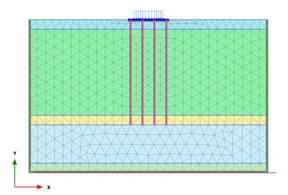
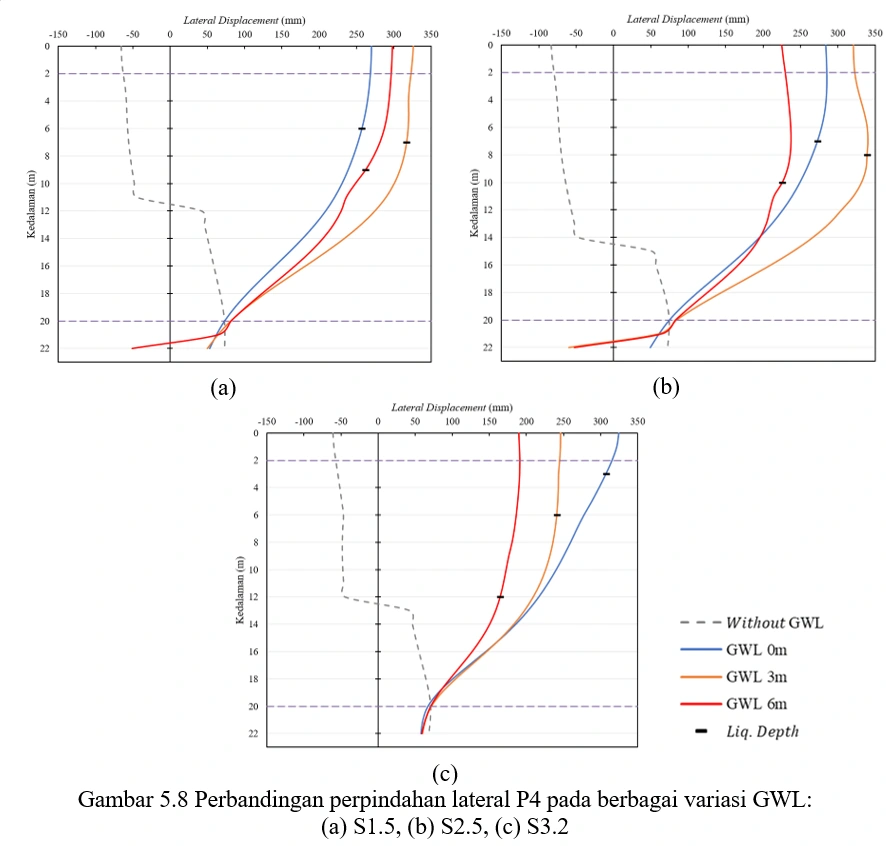
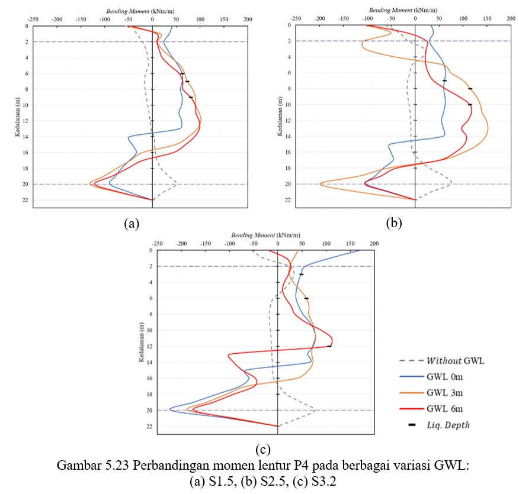

Numerical Study of Pile Foundation Behavior due to Liquefaction: Variation of Groundwater Level and Pile Spacing
A geotechnical research thesis using finite element numerical modeling (PLAXIS 2D) to investigate how pile foundations behave under liquefaction conditions, examining the effects of groundwater level depth and pile spacing as key variables.

Research Background
Liquefaction is a phenomenon where saturated, loosely packed soil temporarily loses its shear strength during seismic shaking, behaving like a viscous liquid. This can cause catastrophic failure of pile foundations, which are widely used in Indonesia for structures on soft ground.
Understanding how different groundwater levels and pile spacing configurations affect foundation behavior during liquefaction is critical for designing safer infrastructure in earthquake-prone regions of Indonesia.
Research Objectives
- Model pile foundation behavior in liquefiable soil using PLAXIS 2D finite element software
- Evaluate the effect of groundwater level variation on liquefaction extent and pile response
- Analyze how pile spacing affects group pile behavior under liquefaction conditions
- Quantify pile deformation, bending moments, and axial forces for different scenarios
- Develop practical guidelines for pile design in liquefaction-susceptible areas
Methodology
- Literature review on liquefaction mechanisms and pile foundation behavior
- Soil parameter determination, constitutive model selection, and non-linear time history spectral matching
- PLAXIS 2D model construction and calibration with published case studies
- Parametric study: varying groundwater depth (3 levels) and pile spacing (3 configurations)
- Result analysis and comparison across all scenario combinations


